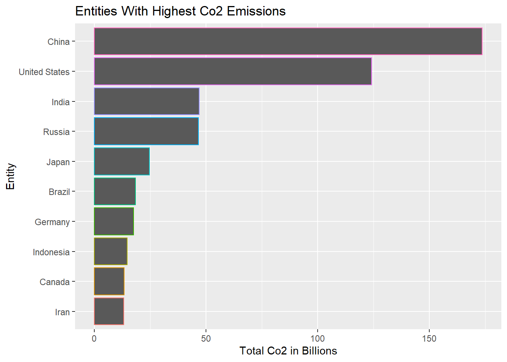
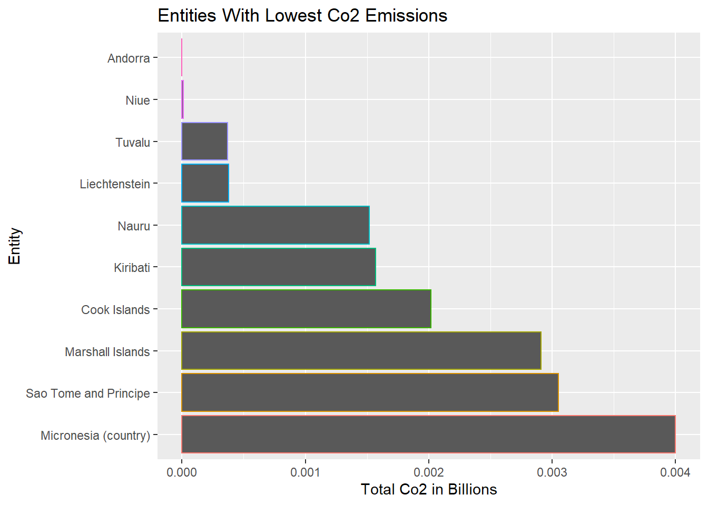
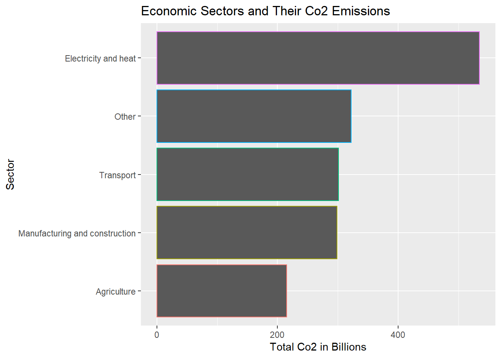
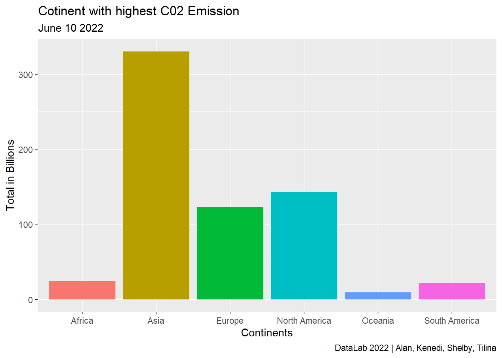
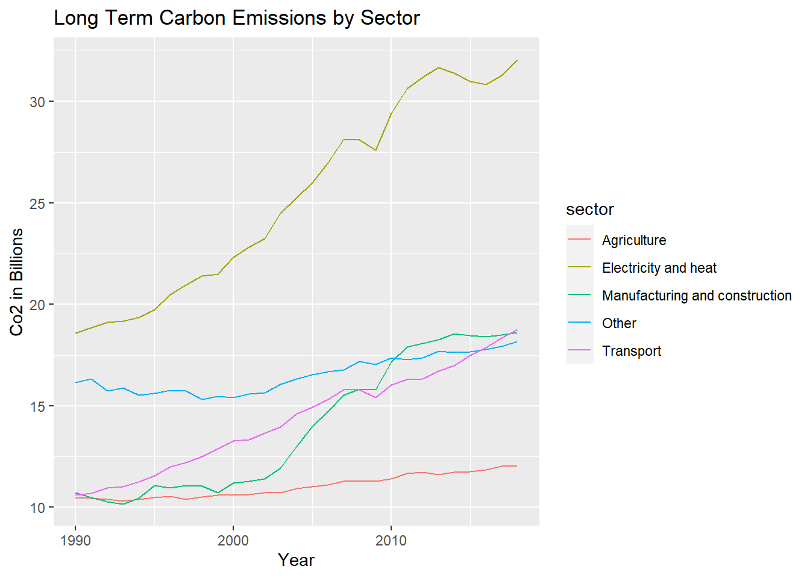
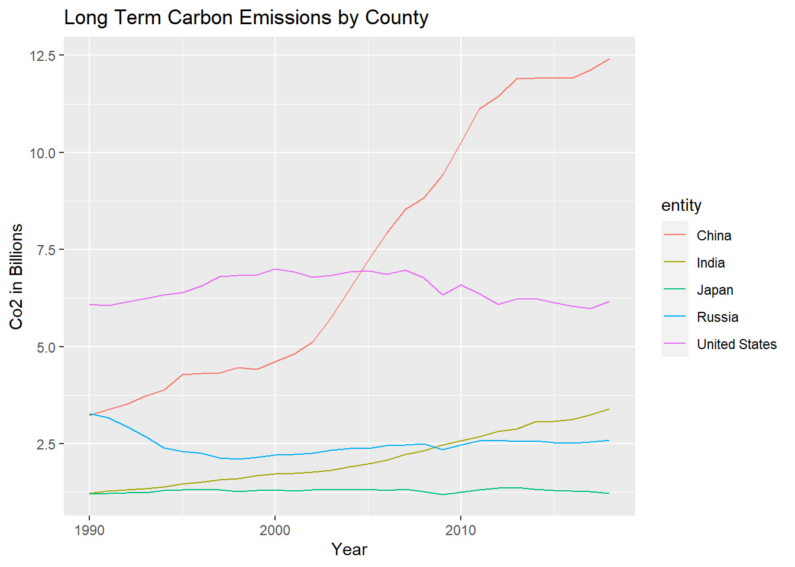
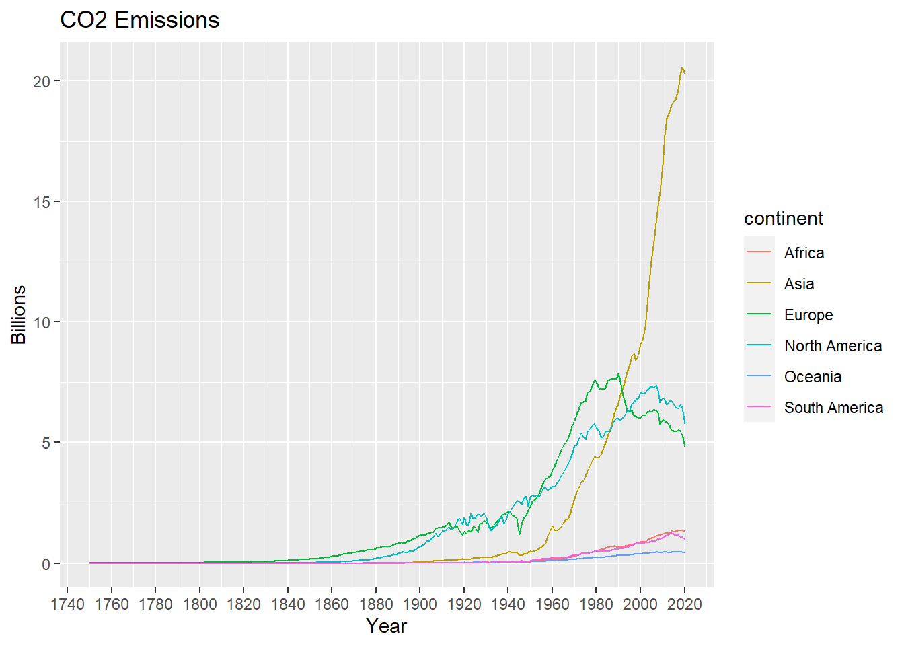
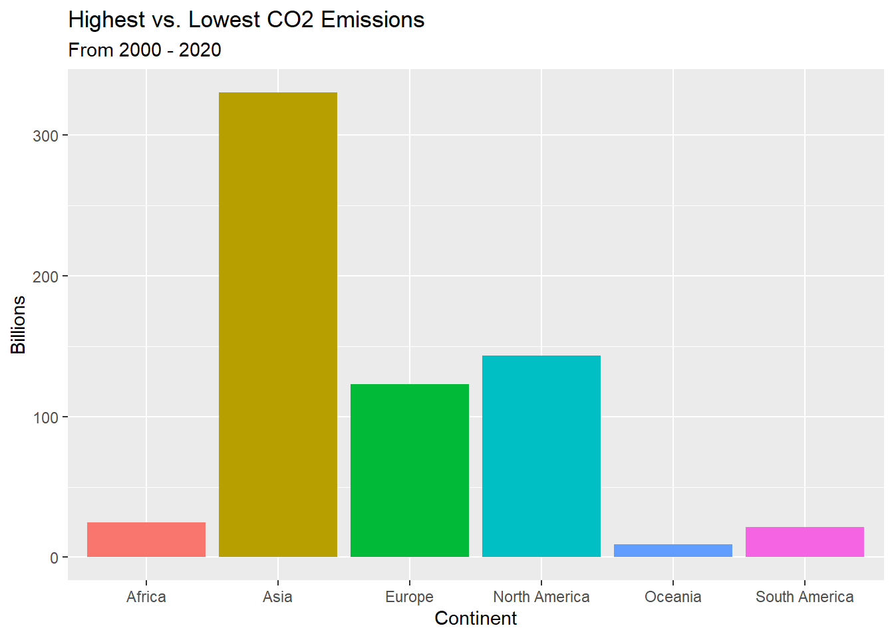

Entities with the Highest Co2 Emissions:

Entities with the Lowest Co2 Emissions:

Sectors with the Highest and Lowest Co2 Emissions:

Regions with highest Emissions: 
Sector-by-Sector:

Country-by-Country: 
Globally:
